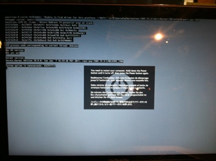

its crashing, its a good sign.

Down the Hard Road
Wednesday, October 2, 2013
#include <rant.h>
#include <uselessblogpost.h>
//------Caution toatal ranting, AND SOUND if you have work to do just do it, don’t let this waste your time.
“Why is this still hosted on my primary server? Honestly I am lazy as they come. As creativity comes, to creativity I am as boring as they come, however get me on the right topic I can talk for Ages. To the point of headaches. Unfortunately few understand the complex internal mechanism of my cerebral cortex. You now what else bugs me, iWeb ’08 does not support animated GIFS (It is highly unlikely it ever will) also when in photoshop and the teacher requests you to save as a TIFF or JPEG. Why no love for PNG. It is substantially better than EVERY other image format, transparency, high DPI, low file size and universal compatibility. It makes me wonder, did we encode the images on the Voyager spacecraft in PNG, otherwise the foreign life may not be able to recognize them.
In recent development world, my fork of the webkit browser is moving on, as well as my NDS Open Sourced MultiMedia Launcher( I need a new name). It supports a shit ton of stuff adding functionality to a 7 year old console with only 4Megabytes of Ram and a 66Mhz (it even interferes with the FM Band of radio when overclocked to 70 Mhz!) CPU Compare that to my Dual Core i5 running at 3.2 Ghz. See the download page for more information on the NDS Multimedia Player. Also I have initialized project Paper CPU, a project that will teach, myself and mabye others low level Assembly programing, and the revolutionary part is, it is a whole 8-bit CPU that will run on sheets of paper, so much cheaper than the linux pc. (I have nothing against the RPI, in fact I am in the process of procuring one.)
You know what else drives me crazy? Is when a someone thinks they know more in a field that they clearly know almost nothing about, or their little knowledge is incredibly biased. To much shit. At least I have the shoes to get through it.
//end rant
Props to those who can recognize the reference to that last sentence, it is a good film.
Also in sadder news, Tom Clancy, who authored one of my favorite books and influenced my favorite films such as The Hunt for Red October has passed away. It was a major loss for all, and my condolences to his family.
Gotta love kernal Panics when developing The Northern Lights. Had to do a full system restore, did not backup ANYTHING.
